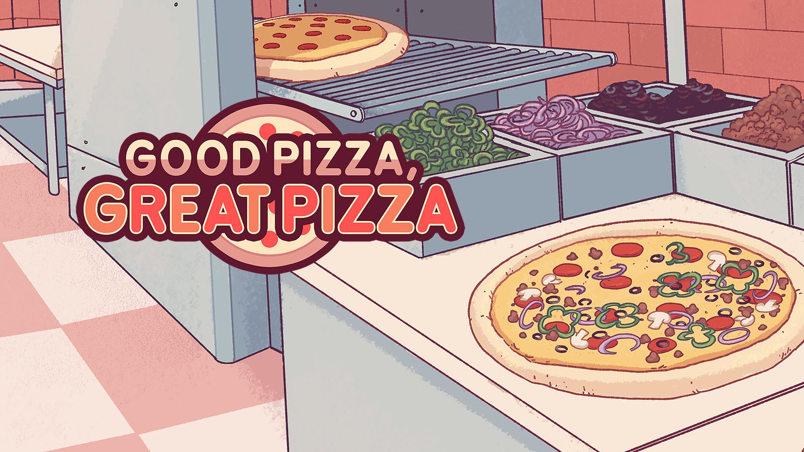
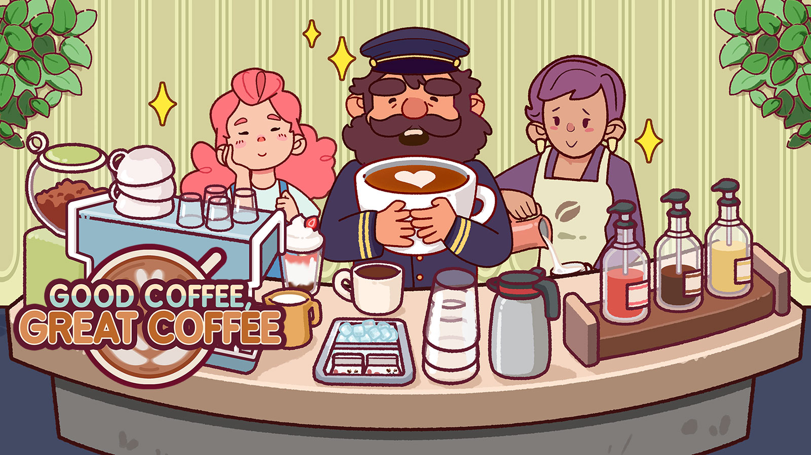

Game design at TapBlaze
Systems, content, and live operations.
My role connects design ideas with the details that shape how people play: goals, progression, rewards, difficulty, and the stories around them.

TapBlaze · Lead game design
Good Pizza, Great Pizza
My work spans game systems, content, economy balancing, and live operations. I use playtesting, player data, and team design reviews to inform balancing and ongoing content.
At GDC 2025, I spoke about creating engaging decors in the game.

TapBlaze · Lead game design
Good Coffee, Great Coffee
I work on game systems and content, including progression and challenge design, player goals, and economy balancing. This involves connecting design requirements with how players interact with the game.
Official game page ↗TapBlaze · Level design and balancing
Homecraft
I guide level balancing and difficulty progression, using gameplay metrics and design reviews to inform tuning and feedback to fellow designers.
I also explore AI-assisted level generation and automated playtesting, focusing on gameplay requirements and the limits of simulated player behavior.
Official game page ↗How I approach design decisions
I use AI-assisted analysis to investigate retention and experiment results, while checking the evidence behind the conclusions: player goals, metric definitions, and the comparability of player groups.
That process helps turn a data question into a clearer design hypothesis and a testable next step.